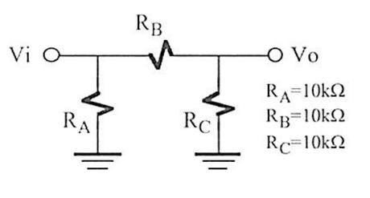
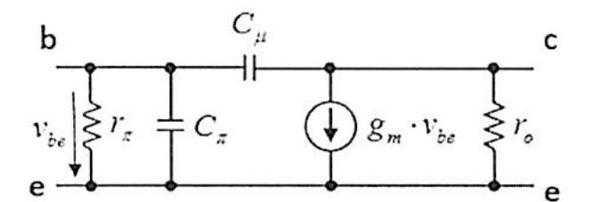
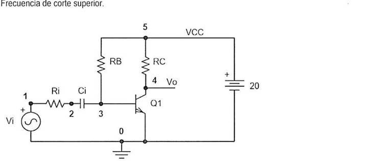
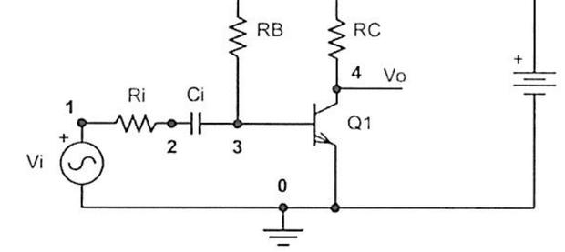
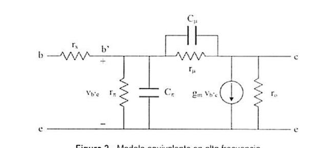
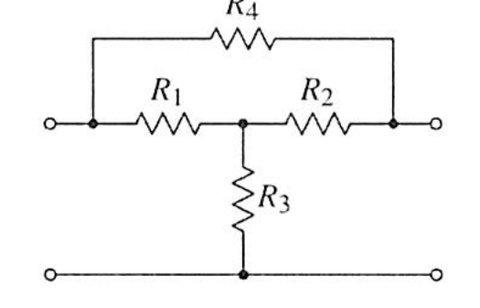
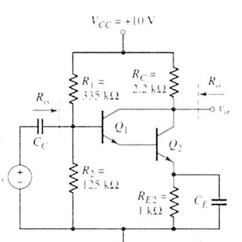
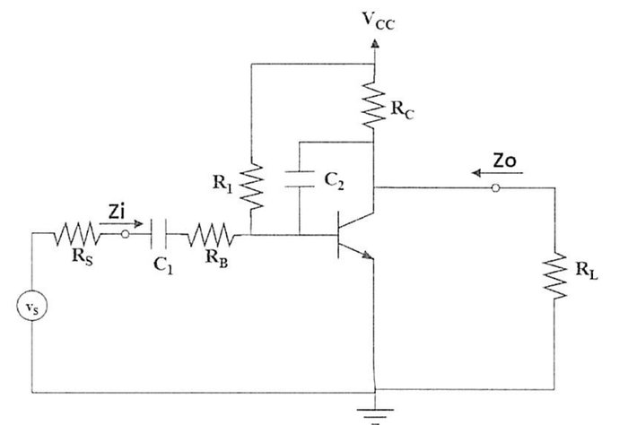

Exámenes del segundo parcial
Segundo parcial: cuadripolos y transistores, resueltos desde cero
Cómo usar esta página
Los dos exámenes tienen la misma forma: un ejercicio de cuadripolo (parámetros $g$), un ejercicio de transistor y un problema largo con ganancia, impedancias y frecuencias de corte. Haz el ejercicio con papel y abre solo el paso en el que te atascas. Todos los números están recalculados con un programa. En el examen de julio de 2024 y en el de diciembre de 2023 hay discrepancias con la solución publicada en el aula virtual, y están explicadas en cada ejercicio con un recuadro «Ojo».
| Examen | Ejercicio | Tema | Dificultad |
|---|---|---|---|
| P2 Jul 2024 | Red en $\pi$ y parámetros g, emisor común, amplificador con acoplo | Cuadripolos, ganancia a frecuencias medias, Miller, frecuencias de corte | ●●● |
| P2 Dic 2023 | Red en T con R4, Darlington, emisor común con capacidad parásita | Parámetros g, transistor equivalente, Miller, frecuencias de corte | ●●● |
Examen · segundo parcial de la convocatoria de julio, curso 23-24
Cuadripolo de tipo g de una red resistiva
Ejercicio 1 · 2 puntos
Enunciado
Obtén el cuadripolo de tipo g equivalente del circuito. $R_A=R_B=R_C=10$ kΩ.

0La idea, desde cero
Un cuadripolo es una caja con dos puertos y cuatro números que lo describen. Los parámetros g expresan la corriente de entrada y la tensión de salida:
$i_1=g_{11}v_1+g_{12}i_2$ y $v_2=g_{21}v_1+g_{22}i_2$.
Cada parámetro se halla cortocircuitando o abriendo el puerto que toca: $g_{11}$ y $g_{21}$ con el puerto 2 abierto ($i_2=0$); $g_{12}$ y $g_{22}$ con el puerto 1 en cortocircuito ($v_1=0$).
1$g_{11}$ y $g_{21}$: puerto 2 abierto
Con la salida abierta no pasa corriente por $R_C$ a la carga: $R_B$ y $R_C$ quedan en serie y se ponen en paralelo con $R_A$. Desde la entrada: $R_A\parallel(R_B+R_C)=10\parallel20=\dfrac{20}{3}$ kΩ. Entonces $g_{11}=\dfrac{i_1}{v_1}=\dfrac{3}{20}\text{ mS}=0{,}15$ mS.
La tensión de salida es la de un divisor entre $R_B$ y $R_C$: $g_{21}=\dfrac{v_2}{v_1}=\dfrac{R_C}{R_B+R_C}=\dfrac12$.
2$g_{12}$ y $g_{22}$: puerto 1 en cortocircuito
Con $v_1=0$, $R_A$ queda en cortocircuito y $R_B$ va de la salida a masa. Desde la salida, $R_B$ y $R_C$ quedan en paralelo: $g_{22}=\dfrac{v_2}{i_2}=R_B\parallel R_C=5$ kΩ.
La corriente $i_2$ se reparte a partes iguales entre $R_B$ y $R_C$. La que pasa por $R_B$ llega al puerto 1 y sale por el cortocircuito, es decir, sale del puerto: $i_1=-\dfrac12i_2$ y $g_{12}=-\dfrac12$.
Resultado
Solución
$g_{11}=0{,}15$ mS, $g_{12}=-\tfrac12$, $g_{21}=\tfrac12$, $g_{22}=5$ kΩ. Como la red es recíproca, $g_{12}=-g_{21}$.
Ojo: el enunciado pide parámetros g y la solución publicada calcula los h
La solución del aula virtual obtiene $h_{11}=5$ kΩ, $h_{12}=\tfrac12$, $h_{21}=-\tfrac12$ y $h_{22}=0{,}15$ mS. Esos números son correctos para el cuadripolo h, y están muy cerca de los g de arriba: la matriz $g$ es la inversa de la matriz $h$. Compruébalo: el determinante de $h$ vale $5\cdot0{,}15+\tfrac14=1$, y al invertir queda $g_{11}=0{,}15$ mS, $g_{12}=-\tfrac12$, $g_{21}=\tfrac12$, $g_{22}=5$ kΩ. Si en el examen te piden $g$, no entregues la $h$.
Ejercicio 2 · 2,5 puntos · emisor común: ganancia y corte superior
Enunciado
El transistor se modela en $\pi$ con $g_m=0{,}083$ S. Calcula (a) la ganancia a frecuencias medias y (b) la frecuencia de corte superior. Datos: $R_i=600$ Ω, $R_B=1088{,}5$ kΩ, $R_C=4{,}7$ kΩ, $r_\pi=1449$ Ω, $r_o=20$ kΩ, $C_\mu=10{,}5$ pF, $C_\pi=121{,}2$ pF.


0La idea, desde cero
Esto es un emisor común: la señal entra por la base y sale por el colector. A frecuencias medias el condensador de acoplo $C_i$ es un cortocircuito y los condensadores internos $C_\pi$ y $C_\mu$ son circuitos abiertos. A frecuencias altas son $C_\pi$ y $C_\mu$ los que empiezan a actuar y recortan la ganancia. La alimentación $V_{CC}$ y masa son lo mismo para la señal.
1(a) Ganancia a frecuencias medias
Resistencia de entrada vista desde $R_i$: $R_B\parallel r_\pi=1088{,}5\text{ k}\parallel1{,}449\text{ k}=1{,}447$ kΩ. La tensión en la base es un divisor: $v_{be}=\dfrac{1447}{600+1447}v_i=0{,}707\,v_i$.
La fuente de corriente $g_mv_{be}$ circula por $R_C\parallel r_o=4{,}7\parallel20=3{,}806$ kΩ y da la tensión de salida, con signo menos: $v_o=-g_m\,v_{be}\,(R_C\parallel r_o)$.
$A_v=-0{,}083\cdot3806\cdot0{,}707=\mathbf{-223}$ ($\approx47{,}0$ dB).
2(b) Efecto de Miller
$C_\mu$ une la base con el colector. Por Miller se «parte» en dos condensadores a masa. La ganancia entre sus extremos es $A=-g_m(R_C\parallel r_o)=-0{,}083\cdot3806=-315{,}9$.
En la entrada: $C_M=C_\mu(1-A)=10{,}5\text{ pF}\cdot316{,}9=3327$ pF. En la salida: $C_\mu(1-1/A)\approx10{,}5$ pF.
3(b) La frecuencia de corte superior
En la entrada hay dos condensadores en paralelo vistos por la misma resistencia, así que se suman: $C_{in}=C_\pi+C_M=121{,}2+3327=3448$ pF. La resistencia que ven es la de Thévenin de la entrada: $R_{th}=R_i\parallel R_B\parallel r_\pi=600\parallel1447=424$ Ω.
$f_{cs}=\dfrac{1}{2\pi R_{th}C_{in}}=\dfrac{1}{2\pi\cdot424\cdot3448\cdot10^{-12}}=\mathbf{108{,}8\text{ kHz}}$.
El condensador de salida ($10{,}5$ pF con $3806$ Ω) daría un polo en 4 MHz, unas 36 veces más alto, y se puede despreciar (polo dominante). Resolviendo el circuito completo sin aproximar, el $-3$ dB está en 105,8 kHz: el método de Miller se queda a un 3 %.
Ojo: la solución publicada usa $R_B=1088{,}5$ Ω en vez de kΩ
El enunciado dice $R_B=1088{,}5$ kΩ. La solución del aula virtual escribe $R_B=1088{,}5$ Ω y por eso calcula $r_\pi\parallel R_B=621{,}6$ Ω (en vez de 1447 Ω). Con ese cambio sale $A_v=-160{,}7$ y $f_{cs}=156{,}7$ kHz. Con el dato del enunciado: $A_v=-223$ y $f_{cs}=108{,}8$ kHz. Además, esa solución trata el efecto de $C_\pi$ y el de Miller como polos separados y se queda solo con el mayor; pero ven la misma resistencia, así que los condensadores se suman.
Resultado
Solución
$A_v=-223$ (47 dB). $f_{cs}\approx109$ kHz (108,8 por Miller; 105,8 kHz exacta).
Problema · 5,5 puntos · emisor común con acoplo: ganancia, impedancias y cortes
Enunciado
El transistor $Q_1$ tiene el modelo de alta frecuencia de la figura 2 y los parámetros que no se dan son despreciables ($r_x=0$, $r_\mu=\infty$). Determina: (a) modelo en pequeña señal, (b) $V_o/V_i$ a frecuencias medias, (c) impedancia de entrada, (d) impedancia de salida, (e) frecuencia de corte inferior $f_{ci}$, (f) frecuencia de corte superior $f_{cs}$. Datos: $R_i=600$ Ω, $R_B=1$ MΩ, $R_C=4{,}7$ kΩ, $C_i=10$ µF, $g_m=0{,}083$ S, $r_\pi=1{,}4$ kΩ, $r_o=20$ kΩ, $C_\mu=10$ pF, $C_\pi=100$ pF.


0La idea, desde cero
Es el mismo emisor común del ejercicio 2, ahora con todo lo que se pregunta de un amplificador: tres zonas de frecuencia. A frecuencias medias los condensadores externos ($C_i$) son cortocircuitos y los internos ($C_\pi$, $C_\mu$) son abiertos. A frecuencias bajas manda $C_i$. A frecuencias altas mandan $C_\pi$ y $C_\mu$.
1(a) Modelo en pequeña señal
Se apaga $V_{CC}$ (masa para la señal). Queda: fuente $v_i$, $R_i$, $C_i$ en serie hasta la base. En la base, a masa: $R_B$ (porque su otro extremo es $V_{CC}$), $r_\pi$ en paralelo con $C_\pi$. Entre base y colector, $C_\mu$. En el colector, a masa: la fuente $g_mv_{be}$, $r_o$ y $R_C$.
2(b) Ganancia a frecuencias medias
$R_B\parallel r_\pi=1000\text{ k}\parallel1{,}4\text{ k}=1398$ Ω. Divisor: $v_{be}=\dfrac{1398}{600+1398}v_i=0{,}6997\,v_i$. Carga del colector: $R_C\parallel r_o=3806$ Ω.
$A_v=-g_m(R_C\parallel r_o)\dfrac{R_B\parallel r_\pi}{R_i+R_B\parallel r_\pi}=-0{,}083\cdot3806\cdot0{,}6997=\mathbf{-221}$ ($\approx46{,}9$ dB).
3(c) Impedancia de entrada
Desde el punto 3 (la base, después de $C_i$): $Z_{in}=R_B\parallel r_\pi=\mathbf{1398\ \Omega}$. Si se cuenta desde la fuente, se suma $R_i$: $1998$ Ω. Indica en el examen desde dónde la calculas.
4(d) Impedancia de salida
Se apaga $v_i$. Entonces $v_{be}=0$ y la fuente $g_mv_{be}$ vale cero (circuito abierto). Desde el colector se ve $R_C\parallel r_o=\mathbf{3{,}81\text{ k}\Omega}$.
5(e) Frecuencia de corte inferior
A frecuencias bajas solo actúa $C_i$. Con la fuente apagada, $C_i$ ve en serie $R_i$ y la entrada: $R=R_i+R_B\parallel r_\pi=600+1398=1998$ Ω.
$f_{ci}=\dfrac{1}{2\pi C_iR}=\dfrac{1}{2\pi\cdot10\cdot10^{-6}\cdot1998}=\mathbf{7{,}97\text{ Hz}}$.
6(f) Frecuencia de corte superior
Ganancia de Miller: $A=-g_m(R_C\parallel r_o)=-315{,}9$. $C_M=C_\mu(1-A)=10\cdot316{,}9=3169$ pF a la entrada. $C_{in}=C_\pi+C_M=3269$ pF. $R_{th}=R_i\parallel R_B\parallel r_\pi=600\parallel1398=420$ Ω.
$f_{cs}=\dfrac{1}{2\pi\cdot420\cdot3269\cdot10^{-12}}=\mathbf{116\text{ kHz}}$.
El condensador de salida (10 pF con 3806 Ω) da un polo en 4,2 MHz y se desprecia. Sin aproximar, el $-3$ dB exacto está en 112,7 kHz (el método da un 3 % de más). Si solo se toma el condensador de Miller y se ignora $C_\pi$ sale 119,6 kHz, unos 4 kHz por encima; conviene sumar los dos.
Respuesta en frecuencia · julio de 2024, problema
Banda de paso de 46,9 dB entre 8 Hz y 116 kHz, con pendientes de $\pm20$ dB/dec en los extremos.
Ojo: la solución publicada con este examen es de otro circuito
El archivo del aula virtual trae, para el problema, la resolución de un amplificador de dos transistores (emisor común más base común, con $R_s$, $C_s$, $C_E$ y $C_B$) y no la del circuito del enunciado, que es un único emisor común con $R_i$, $C_i$, $R_B$, $R_C$ y el modelo de la figura 2. Los resultados de arriba son los del circuito del enunciado, recalculados con un programa.
Resultado
Solución
$A_v=-221$ (46,9 dB). $Z_{in}=1398$ Ω (1998 Ω con $R_i$). $Z_{out}=3{,}81$ kΩ. $f_{ci}=7{,}97$ Hz. $f_{cs}\approx116$ kHz (exacta 112,7 kHz).
Examen · segundo parcial, diciembre de 2023 (curso 23-24)
Cuadripolo g de una red en T con puente
Ejercicio 1 · 2 puntos
Enunciado
Obtén el cuadripolo de tipo $g$ equivalente. $R_1=R_2=R_3=1$ kΩ y $R_4=9$ kΩ.

0La idea, desde cero
Mismo método que en el examen anterior. Parámetros $g$: $i_1=g_{11}v_1+g_{12}i_2$ y $v_2=g_{21}v_1+g_{22}i_2$. Se obtienen $g_{11}$ y $g_{21}$ con el puerto 2 abierto, y $g_{12}$ y $g_{22}$ con el puerto 1 cortocircuitado. Llama $M$ al punto medio entre $R_1$ y $R_2$.
1$g_{11}$: puerto 2 abierto
Con $i_2=0$, $R_4$ y $R_2$ quedan en serie (puerto 1 → $R_4$ → puerto 2 → $R_2$ → $M$) y se ponen en paralelo con $R_1$ entre el puerto 1 y $M$: $R_1\parallel(R_4+R_2)=1\parallel10=\dfrac{10}{11}$ kΩ. Después $R_3$ a masa. La resistencia de entrada es $\dfrac{10}{11}+1=\dfrac{21}{11}$ kΩ, así que $g_{11}=\dfrac{11}{21}\text{ mS}=0{,}524$ mS.
2$g_{21}$: puerto 2 abierto
Tensión en $M$: divisor entre $\frac{10}{11}$ kΩ y $R_3$: $v_M=\dfrac{1}{21/11}v_1=\dfrac{11}{21}v_1$. La salida (puerto 2) está en el divisor $R_4$–$R_2$ entre $v_1$ y $v_M$: $v_2=v_1-(v_1-v_M)\dfrac{R_4}{R_4+R_2}=v_1-\dfrac{10}{21}v_1\cdot\dfrac{9}{10}=\dfrac{12}{21}v_1$. Entonces $g_{21}=\dfrac{4}{7}\approx0{,}571$.
3$g_{22}$: puerto 1 en cortocircuito
Con $v_1=0$, desde el puerto 2: $R_4$ va a masa (porque el puerto 1 está a masa) y, en paralelo, $R_2$ más $R_1\parallel R_3=0{,}5$ kΩ, es decir $1{,}5$ kΩ. $g_{22}=9\parallel1{,}5=\dfrac{9}{7}\text{ k}\Omega=1286$ Ω.
4$g_{12}$: puerto 1 en cortocircuito
La corriente $i_2$ se reparte entre la rama de $R_4$ (9 kΩ) y la de $R_2$ (1,5 kΩ): por $R_4$ pasa $\dfrac{1{,}5}{10{,}5}=\dfrac17i_2$ y por $R_2$, $\dfrac67i_2$. Esta última se divide en $M$ por igual entre $R_1$ y $R_3$: por $R_1$ pasan $\dfrac37i_2$. La corriente que sale por el puerto 1 es $\dfrac17+\dfrac37=\dfrac47$ de $i_2$, y con el criterio de signos del cuadripolo, $g_{12}=-\dfrac47$.
Resultado
Solución
$g_{11}=\dfrac{11}{21}$ mS $=0{,}524$ mS, $g_{12}=-\dfrac47$, $g_{21}=\dfrac47$, $g_{22}=\dfrac97$ kΩ $=1286$ Ω. Red recíproca: $g_{12}=-g_{21}$.
Ojo: la solución publicada tiene un error de signo y da otros valores
La solución del aula virtual obtiene $g_{21}=\tfrac25$ y $g_{11}=\dfrac{41}{45}$ mS ($0{,}911$ mS). Viene de escribir la ecuación del nudo de salida ($i_2=0$) como $V_M=\tfrac19v_1+\tfrac89v_2$. Lo correcto es $\dfrac{V_M-v_2}{R_2}+\dfrac{v_1-v_2}{R_4}=0$, que da $V_M=\dfrac{10v_2-v_1}{9}$. Con eso y $v_1+v_2=3V_M$ sale $g_{21}=\tfrac47$. Lo he comprobado resolviendo el circuito con un programa y con la comprobación independiente de los pasos de arriba (reciprocidad $g_{12}=-g_{21}$ y las resistencias vistas).
Ejercicio 2 · 2,5 puntos · par Darlington
Enunciado
Montaje en Darlington. (a) Circuito equivalente en pequeña señal. (b) Ganancia a frecuencias medias. (c) Impedancia de entrada. (d) Impedancia de salida. (e) ¿Se puede sustituir el par por un transistor equivalente? ¿Con qué parámetros? Datos: $R_1=335$ kΩ, $R_2=125$ kΩ, $R_C=2{,}2$ kΩ, $R_{E2}=1$ kΩ. $Q_1$: $h_{ie1}=1$ kΩ, $h_{fe1}=100$. $Q_2$: $h_{ie2}=1$ kΩ, $h_{fe2}=5$.

0La idea, desde cero
En un Darlington, $Q_1$ amplifica la corriente de base y su emisor la entrega como corriente de base de $Q_2$. Eso multiplica las ganancias. A frecuencias medias $C_C$ y $C_E$ son cortocircuitos: $R_{E2}$ queda puesta a masa por $C_E$ y no cuenta.
1(a) Modelo
La señal ve $R_B=R_1\parallel R_2=335\parallel125=91{,}03$ kΩ a masa en la base de $Q_1$. De la base de $Q_1$ a su emisor está $h_{ie1}$; ese emisor es la base de $Q_2$, con $h_{ie2}$ al emisor de $Q_2$ (a masa). Las fuentes de corriente $h_{fe1}i_{b1}$ y $h_{fe2}i_{b2}$ van del colector común a masa, en paralelo con $R_C$.
2Relaciones entre las corrientes
Por el emisor de $Q_1$ sale $(1+h_{fe1})i_{b1}$ y esa corriente es la de base de $Q_2$: $i_{b2}=(1+h_{fe1})i_{b1}=101\,i_{b1}$. La corriente de colector total es $i_c=h_{fe1}i_{b1}+h_{fe2}i_{b2}=(100+5\cdot101)i_{b1}=605\,i_{b1}$.
La tensión de entrada cae en las dos uniones: $v_g=h_{ie1}i_{b1}+h_{ie2}i_{b2}=[1+1\cdot101]\text{ k}\Omega\cdot i_{b1}=102\text{ k}\Omega\cdot i_{b1}$.
3(b) Ganancia
$v_o=-R_Ci_c=-2200\cdot605\,i_{b1}$. $A_v=\dfrac{v_o}{v_g}=-\dfrac{2200\cdot605}{102000}=\mathbf{-13{,}05}$.
4(c) Impedancia de entrada
Desde la base de $Q_1$ se ve $h_{ie1}+(1+h_{fe1})h_{ie2}=102$ kΩ, en paralelo con $R_B$: $Z_{in}=91{,}03\parallel102=\mathbf{48{,}1\text{ k}\Omega}$.
5(d) Impedancia de salida
Se apaga la fuente de entrada. Entonces $i_{b1}=0$, $i_{b2}=0$ y las dos fuentes de corriente valen cero. Desde la salida solo se ve $R_C$: $Z_o=\mathbf{2{,}2\text{ k}\Omega}$.
6(e) Transistor equivalente
Sí: lo que se ve desde fuera es una $h_{ie}^*$ en la entrada y una fuente $h_{fe}^*i_b$ en la salida. Igualando con lo anterior: $h_{fe}^*=h_{fe1}+h_{fe2}(1+h_{fe1})=\mathbf{605}$ y $h_{ie}^*=h_{ie1}+h_{ie2}(1+h_{fe1})=\mathbf{102\text{ k}\Omega}$. (Es el resultado conocido del Darlington: $\beta\approx\beta_1\beta_2$.)
Resultado
Solución
$A_v=-13{,}05$. $Z_{in}=48{,}1$ kΩ. $Z_o=2{,}2$ kΩ. Transistor equivalente con $h_{fe}^*=605$ y $h_{ie}^*=102$ kΩ. Coincide con la solución publicada.
Problema · 5,5 puntos · emisor común con capacidad parásita
Enunciado
$C_1$ es un condensador de acoplo y $C_2$ modela capacidades parásitas. Pide: (a) circuito equivalente, (b) ganancia de tensión a frecuencias medias, (c) ganancia de corriente, (d) $Z_i$, (e) $Z_o$, (f) $f_{ci}$ y (g) $f_{cs}$. Datos: $R_S=500$ Ω, $R_B=5$ kΩ, $R_1=200$ kΩ, $R_C=10$ kΩ, $R_L=1$ kΩ, $C_1=47$ µF, $C_2=120$ pF, $h_{ie}=1$ kΩ, $h_{fe}=50$.

0La idea, desde cero
Mismo planteamiento de siempre: a frecuencias medias, $C_1$ es un cortocircuito y $C_2$ es un circuito abierto. $C_1$ fija el corte inferior y $C_2$ (que une la salida con la entrada) el superior, mediante el efecto de Miller. $V_{CC}$ es masa para la señal, así que $R_1$ queda a masa en la base y $R_C$ a masa en el colector.
1(a) y (b) Ganancia de tensión
$R_1\parallel h_{ie}=200\parallel1=0{,}995$ kΩ y $R_C\parallel R_L=10\parallel1=0{,}909$ kΩ. Divisor de entrada: $v_{be}=\dfrac{995}{500+5000+995}v_g=0{,}1532\,v_g$. Salida: $v_o=-h_{fe}\dfrac{v_{be}}{h_{ie}}(R_C\parallel R_L)$.
$A_v=-909\cdot\dfrac{50}{1000}\cdot0{,}1532=\mathbf{-6{,}96}$ ($\approx16{,}9$ dB).
2(c) Ganancia de corriente
Se define con una fuente de corriente $I_g$ en paralelo con $R_S$ y la corriente $I_s$ que llega a $R_L$: $A_i=\dfrac{I_s}{I_g}$. Se llega a $A_i=|A_v|\dfrac{R_S}{R_L}=6{,}96\cdot\dfrac{500}{1000}=\mathbf{3{,}48}$.
3(d) Impedancia de entrada
$Z_i$ se mide a la derecha de $R_S$: $Z_i=R_B+R_1\parallel h_{ie}=5000+995=\mathbf{5{,}995\text{ k}\Omega}\approx6$ kΩ. (Si se contara desde la fuente, se sumaría $R_S$: 6,5 kΩ.)
4(e) Impedancia de salida
Con la entrada apagada, $i_b=0$ y la fuente $h_{fe}i_b$ vale cero. Se mide en el colector antes de $R_L$: $Z_o=R_C=\mathbf{10\text{ k}\Omega}$.
5(f) Frecuencia de corte inferior
$C_1$ ve en serie $R_S$, $R_B$ y $R_1\parallel h_{ie}$: $R=500+5000+995=6495$ Ω. $f_{ci}=\dfrac{1}{2\pi\cdot47\cdot10^{-6}\cdot6495}=\mathbf{0{,}52\text{ Hz}}$.
6(g) Frecuencia de corte superior
Ganancia entre los extremos de $C_2$: $A=-\dfrac{(R_C\parallel R_L)h_{fe}}{h_{ie}}=-45{,}45$. A la entrada, $C_X=C_2(1-A)=120\text{ pF}\cdot46{,}45=5575$ pF, vista por $R_{th}=(R_S+R_B)\parallel R_1\parallel h_{ie}=5500\parallel995=843$ Ω.
$f_{cs}=\dfrac{1}{2\pi\cdot843\cdot5575\cdot10^{-12}}=\mathbf{33{,}9\text{ kHz}}$.
A la salida, $C_Y=C_2(1-1/A)=122$ pF con $909$ Ω da un polo en 1,43 MHz, 42 veces más alto: se desprecia. Resolviendo el circuito sin aproximar, el $-3$ dB está en 33,0 kHz.
Respuesta en frecuencia · diciembre de 2023, problema
Banda de paso de 16,9 dB entre 0,52 Hz y 33,9 kHz.
Resultado
Solución
$A_v=-6{,}96$. $A_i=3{,}48$. $Z_i=5{,}995$ kΩ. $Z_o=10$ kΩ. $f_{ci}=0{,}52$ Hz. $f_{cs}=33{,}9$ kHz (exacta 33,0 kHz). Coincide con la solución publicada.